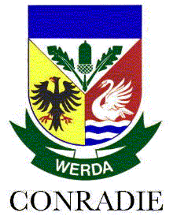

Hierdie is 'n oorsig oor die ontstaan van die Conradie-familie in Duitsland en die aankoms van Friederich Henrich Conradij aan die Kaap de Goede Hoop.
Friederich is gebore in Marburg, Duitsland in 1668 as die seun van 'n Lutherse predikant en vertrek op 20-jarige ouderdom, vermoedelik om werk te soek in Nederland, wat op daardie stadium 'n voorspoedige land was.
Hy sluit aan by die VOC as soldaat en vertrek per skip na Kaapstad, waar hy in Januarie 1689 aanland. Na drie en 'n halwe jaar word sy kontrak beëindig en hy word 'n Vryburger in 1692 — minder as 40 jaar na die aankoms van Jan van Riebeeck.
Hy trou op 35-jarige ouderdom, verkry 'n plaas, en word die stamvader van die Conradies in Suid-Afrika.
Die toepassing bestaan uit drie afdelings:
Die eerste weergawe van die volledige Conradie Stamboom is in 1932 saamgestel deur Hendrik Ludolph Neethling Conradie (c2d4e8f13g5), met opdaterings in 1955 en 1978. Dit was 'n reuse taak, met ondersteuning en hulp van familielede en belangstellendes.
In 2000 het Pieter Jakobus Conradie (c3d5e3f4g13h2i1) die taak oorgeneem om dit by te werk, met 'n hersiene uitgawe in 2007. Daar was ook in-diepte navorsing deur Charl Francois Conradie (c2d5e1f7g3h3i2) betreffende doop-, lidmaat- en grafinskrywings. Verskeie ander persone het self ook baie moeite gedoen en tyd opgeoffer om die geskiedenis te dokumenteer.
Die laaste gedrukte weergawe was in 2014. Dit sou onregverdig wees om die harde werk van hierdie familielede dormant te laat. Hierdie is 'n poging om 'n meganisme te skep waardeur besonderhede intyds bygewerk en gedeel kan word.